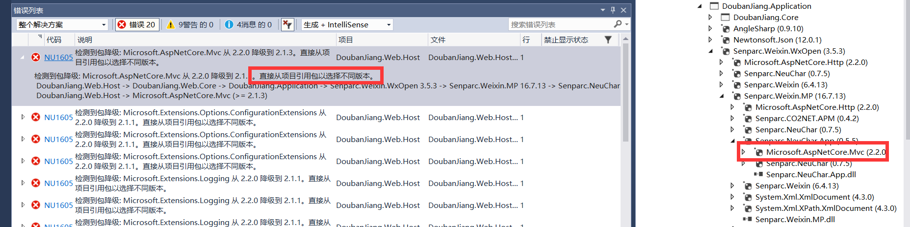

Visual Studio 2017安装nuget包报错
/ / 点击 / 阅读耗时 2 分钟ASP.NetCore 错误 NU1605 检测到包降级: Microsoft.AspnetCore.Mvc 从 2.2.0 降级到 2.1.1
错误 NU1605 检测到包降级: Microsoft.AspNetCore.Mvc 从 2.2.0 降级到 2.1.3。直接从项目引用包以选择不同版本。
DoubanJiang.Web.Host -> DoubanJiang.Web.Core -> DoubanJiang.Application -> Senparc.Weixin.WxOpen 3.5.3 -> Senparc.Weixin.MP 16.7.13 -> Senparc.NeuChar.App 0.5.5 -> Microsoft.AspNetCore.Mvc (>= 2.2.0)
DoubanJiang.Web.Host -> Microsoft.AspNetCore.Mvc (>= 2.1.3) DoubanJiang.Web.Host
昨天晚上申请的小程序发布代码被拒绝了，原因是申请用户信息不符合微信的要求，遂决定将微信模块改成开源工具 Senparc。在安装的时候，默认选择的最高版本，装完之后编译一直就报如题中错的错误。
在项目中按照上面的路径找到了相关的引用，但是没办法按照提示的修改版本。无奈，只能将当前安装的包卸载，下载指定的版本。再次编译通过。
